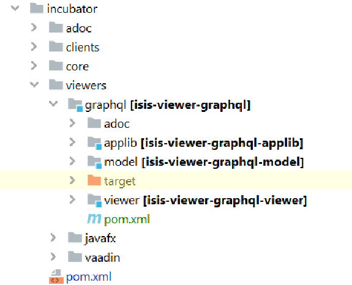

How to setup Dev Environment
To speed up development it makes sense to only have the IDE build the stuff that’s needed.
The approach I use is to have Maven perform a full build of everything, more or less (including the reference app), so that the local cache in ~/.m2/repository is up-to-date.
Then, in the IDE, exclude the parts that won’t change and include in the relevant parts of the reference app (which we can use to iterate on).
Maven Build
Perform a full mvn build, but exclude all of the incubator modules and explicitly bring in this module. Also include the 'wicket' variant of the reference app, as this also includes the graphql viewer (as well as the RO viewer).
mvn install \
-D module-examples-demo-wicket \
-D module-incubator-graphql \
-D skipTestsIntelliJ
In IntelliJ, ignore most of the projects except the ones to be changed or will want to read (eg core). Also, explicit include the relevant parts of the reference app (chances are that this will be excluded initially due to the default profiles.
Thus:
-
exclude
api(applibandschema)I find that IntelliJ can mess up with compiling applib as it depends on DTO classes in schema generated by the mvn maven-jaxb2-plugin plugin; since they change very infrequently, easier to simply pick them up as prebuilt libraries from
~/.m2/repository. -
include
causeway-parent -
include
mavendeps/webapp -
include
commons -
include all of
corefor the
metamodel,interactionandruntime/runtimeservices. Since that is the bulk of core, it’s easiest to include everything. -
include
viewers/commonas it makes sense for this to be a dependency
-
include
incubator/viewers/graphql(of course!) -
optionally include
viewers/restfulobjectsfor a bit of "monkey see, monkey do"
-
exclude everything else
Then, (having also cloned the github repo for the reference app add in its paths:
That is:
-
include
domain -
include
web -
include
wicket/demo-wicket-common -
include
wicket/demo-wicket-jpathis is where the SpringApplication —
DemoAppWicketJpa— resides. It’s faster to use the jpa variant rather than the jdo variant; no need to wait for the DN enhancer.you’ll notice that examples/demo/domain has both Jdo and Jpa entities. These are both compiled, however at runtime the Jdo variants are ignored because the
DemoAppWicketJpaexplicitly sets the "demo-jpa" Spring profile:System.setProperty("spring.profiles.active", "demo-jpa");
|
TODO:
|